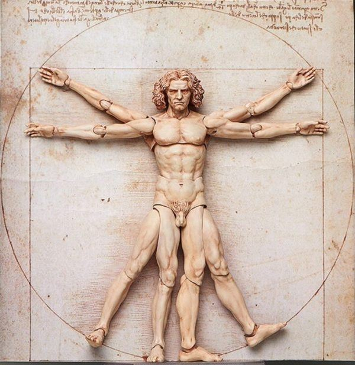

Add the basil, pine nuts and garlic to a blender and blend into a paste.

blockquote - Elemento en BLOQUE
Esta idea es de mi autoria pero esta otra es una
cita textual corta (menos de 40 palabras)
q - Elemento en LINEAcite - elemento en LINEA
Seguid vuestro corazón e intuición porque de alguna manera ya sabéis lo
que realmente queréis llegar a ser
- Steve Jobs
El método push () agrega uno o más elementos al final de una
matriz y devuelve la nueva longitud de la matriz.
if (condition) {
}
Lista de Caracteres especiales (ASCII) en HTML
<h1>
se usa para representar titulos